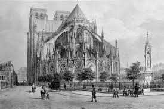

Explorando la Arquitectura Gótica
¿Por qué Arquitectura Gótica? Conoce un poco sobre su historia
La Arquitectura Gótica nace como una revolución del estilo románico en Europa entre los siglos XII y XVI, desarrollandose en Francia y posteriormente extendiéndose por el resto de este continente, como se puede ver hasta la actualidad en construcciones de catedrales, iglesias e incluso edificaciones civiles. En este estilo se deja de lado la estética románica en donde las estructuras eran robustas y con muros gruesos, para darle paso a la verticalidad, la conexión con la luz a través de edificaciones altas y puntudas.
Orígenes y Primeras Manifestaciones (Siglo XII)
El gótico comenzó a desarrollarse en Francia, alrededor del año 1140, con la remodelación de la Basílica de Saint-Denis por el abad Suger. Este proyecto innovador incorporó arcos apuntados y bóvedas de ojiva, características que permitirían una mayor altura y luminosidad en las estructuras. A partir de este momento, el estilo gótico empezó a expandirse, estableciendo un nuevo estándar para la arquitectura religiosa en dichas zonas de Europa. Las primeras catedrales góticas, como la Catedral de Notre-Dame de París (1163), comenzaron a definirse por sus grandes ventanales y la búsqueda de la verticalidad. A finales del siglo XII, el gótico se había consolidado en varias catedrales, incluyendo la de Chartres, que fue completada en 1220. Esta catedral es popular por sus impresionantes vidrieras y su laberinto.

Desarrollo y Expansión (Siglos XIII y XIV)
Durante el siglo XIII, el gótico se expandió rápidamente por Europa, adaptándose a las tradiciones locales. En Francia, se desarrollaron catedrales como la de Amiens (1220-1270) y la de Reims (1211-1290), ambas destacadas por su monumentalidad y la elegancia de sus fachadas. El uso de contrafuertes volantes se hizo más prominente, permitiendo el aumento en la altura de las estructuras y la inclusión de ventanas más grandes. En Inglaterra, el gótico adoptó un estilo distintivo conocido como "gótico perpendicular", que se caracteriza por su enfoque en la verticalidad y la abundancia de ventanas grandes y decorativas. Un ejemplo notable de este estilo es la Catedral de York (1220-1472), que muestra un desarrollo del diseño gótico hacia un estilo más regional. El gótico también se afianzó en Alemania, donde catedrales como la de Colonia (1248-1880) comenzaron a construirse con un enfoque en la verticalidad y una rica ornamentación. Este periodo vio una evolución en el diseño, con la inclusión de detalles escultóricos elaborados y la integración de elementos góticos en la arquitectura civil.
Gótico Tardío (Siglo XV)
Hacia el siglo XV, el gótico comenzó a sufrir transformaciones que lo llevarían hacia el Renacimiento. Aunque el gótico aún se utilizaba en la construcción de catedrales, las características comenzaron a cambiar. La Catedral de Santa María de Estrasburgo (1015-1439) es un ejemplo de la transición hacia un estilo que combinaba elementos góticos con el emergente humanismo del Renacimiento. Este periodo también fue testigo de la construcción de importantes edificios como la Catedral de San Esteban en Viena (1359-1433), que integraba el diseño gótico con toques de la arquitectura renacentista.
El Declive del Gótico y la Influencia del Renacimiento (Siglo XVI)
A finales del siglo XV y principios del XVI, el gótico comenzó a declinar en favor del Renacimiento, que promovía un regreso a la simetría y la proporción clásica. Sin embargo, muchas de las técnicas y conceptos del gótico continuaron influyendo en la arquitectura posterior. La Catedral de San Pablo en Londres (1675-1710), aunque construida en un estilo barroco, incorpora elementos góticos y demuestra cómo el legado de este estilo perduró a lo largo de los siglos.